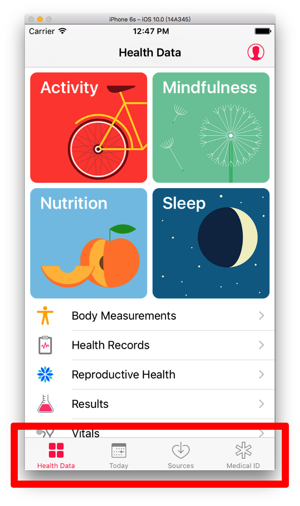

標籤列控制器 UITabBarController
前面兩節分別介紹了在多個頁面間切換以及導覽控制器 UINavigationController ，這節要介紹另一個也是相當常見的元件：標籤列控制器 UITabBarController 。
標籤列控制器與 UINavigationController 類似，也像是個容器，可以用來放置多個頁面，不同的地方在於，它會將可以前往的頁面以標籤列的方式列出，像是內建的 健康 App 就是一個例子，如下：

建立 UITabBarController
這個範例的目標如下，有四個頁面可供切換，皆列在標籤列中：

首先在 Xcode 裡，新建一個 Single View Application 類型的專案，取名為 ExUITabBarController 。
接著先以新增檔案的方式加入三個繼承自 UIViewController 的.swift檔案，分別命名為ArticleViewController、IntroViewController及SettingViewController。以及以加入檔案的方式加入四張按鈕的圖片。
AppDelegate.swift
一開始先依據手動建立頁面的步驟移除 Storyboard 檔案與相關設定，接著在 AppDelegate.swift 中將根視圖控制器設為一個 UITabBarController ，如下：
func application(_ application: UIApplication,
didFinishLaunchingWithOptions
launchOptions:
[UIApplicationLaunchOptionsKey: Any]?)
-> Bool {
// 建立一個 UIWindow
self.window = UIWindow(frame: UIScreen.main.bounds)
// 設置底色
self.window!.backgroundColor = UIColor.white
// 建立 UITabBarController
let myTabBar = UITabBarController()
// 設置標籤列
// 使用 UITabBarController 的屬性 tabBar 的各個屬性設置
myTabBar.tabBar.backgroundColor = UIColor.clear
// 建立頁面 使用系統圖示
let mainViewController = ViewController()
mainViewController.tabBarItem =
UITabBarItem(
tabBarSystemItem: .favorites,
tag: 100)
// 建立頁面 使用自定義圖示 有預設圖片及按下時圖片
let articleViewController = ArticleViewController()
articleViewController.tabBarItem = UITabBarItem(
title: "文章",
image: UIImage(named: "article"),
selectedImage: UIImage(named: "articleSelected"))
// 建立頁面 使用自定義圖示 只有預設圖片
let introViewController = IntroViewController()
introViewController.tabBarItem = UITabBarItem(
title: "介紹",
image: UIImage(named: "profile"),
tag: 200)
// 建立頁面 使用自定義圖示 可使用 tabBarItem 的屬性各自設定
let settingViewController = SettingViewController()
settingViewController.tabBarItem.image =
UIImage(named: "setting")
settingViewController.tabBarItem.title = "設定"
// 加入到 UITabBarController
myTabBar.viewControllers = [
mainViewController,
articleViewController,
introViewController,
settingViewController]
// 預設開啟的頁面 (從 0 開始算起)
myTabBar.selectedIndex = 2
// 設置根視圖控制器
self.window!.rootViewController = myTabBar
// 將 UIWindow 設置為可見的
self.window!.makeKeyAndVisible()
return true
}
上述程式可以看到，如果要設置標籤列的樣式，是使用 UITabBarController 的 tabBar 屬性設置。而各頁面可以使用不同的方式設置標籤列樣式，除了可以使用系統內建的圖示外，也可以設置自定義圖示。
標籤列最多可以放五個圖示，超過的話，最右邊的會變成一個More的圖示，按下後會列出來後續可前往的頁面，如下：

將前述的 UITabBarController 設置完畢後，點選下方標籤列的各圖示即可切換頁面。各頁面都放置一個 UILabel 來代表不同內容，這邊便不再複述，完整程式碼請參考文末的範例程式碼。
以上即為本節範例的內容。
圖片來源
- http://www.flaticon.com/free-icon/file_118714
- http://www.flaticon.com/free-icon/speech-bubble_118712
- http://www.flaticon.com/free-icon/profile_118781
- http://www.flaticon.com/free-icon/settings_118769
範例
本節範例程式碼放在 uikit/uitabbarcontroller